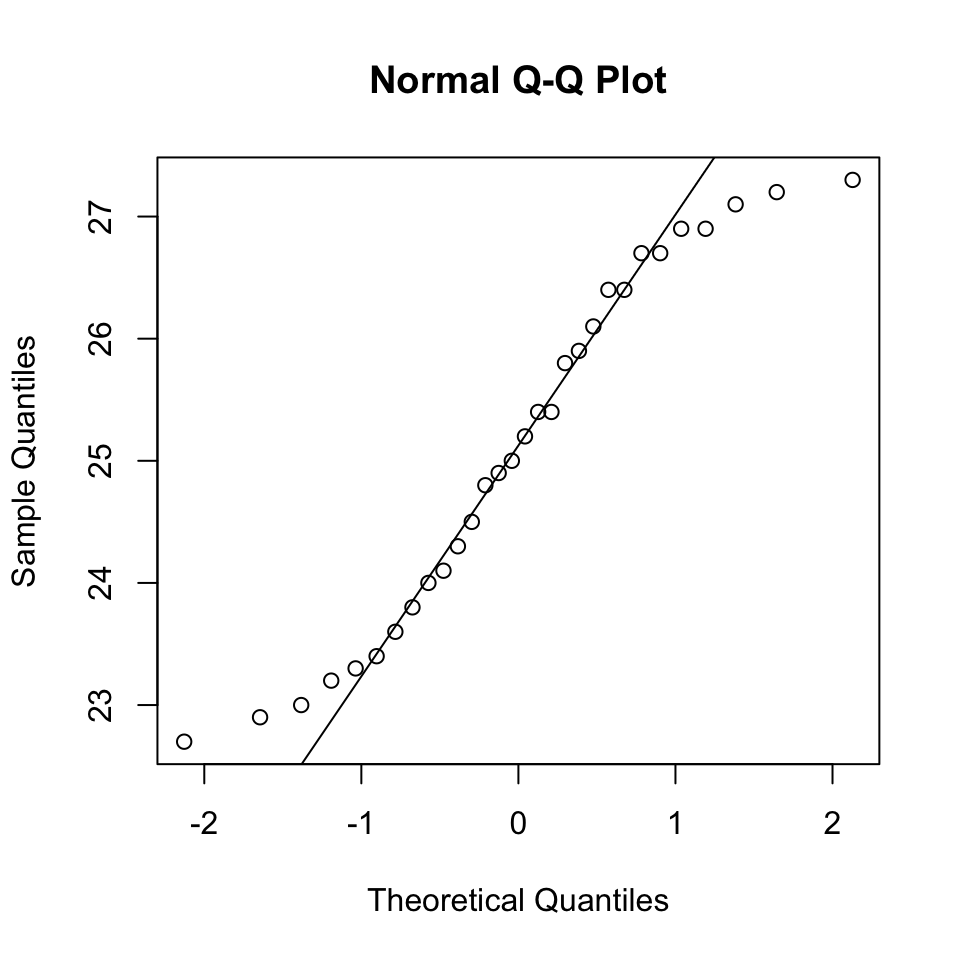
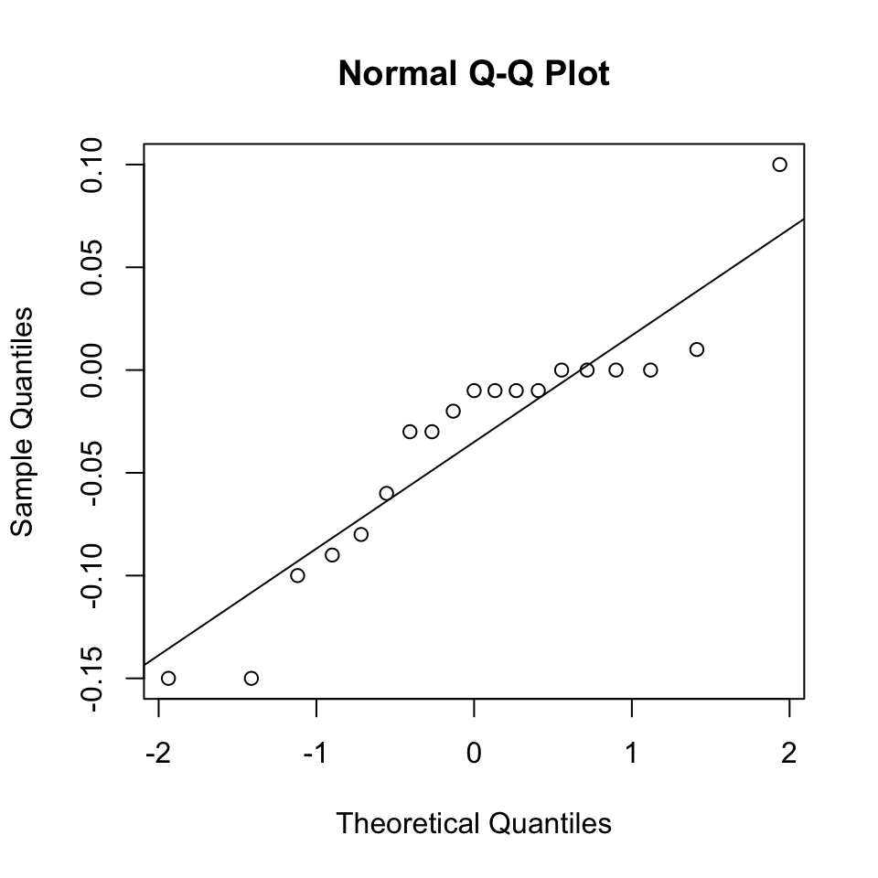
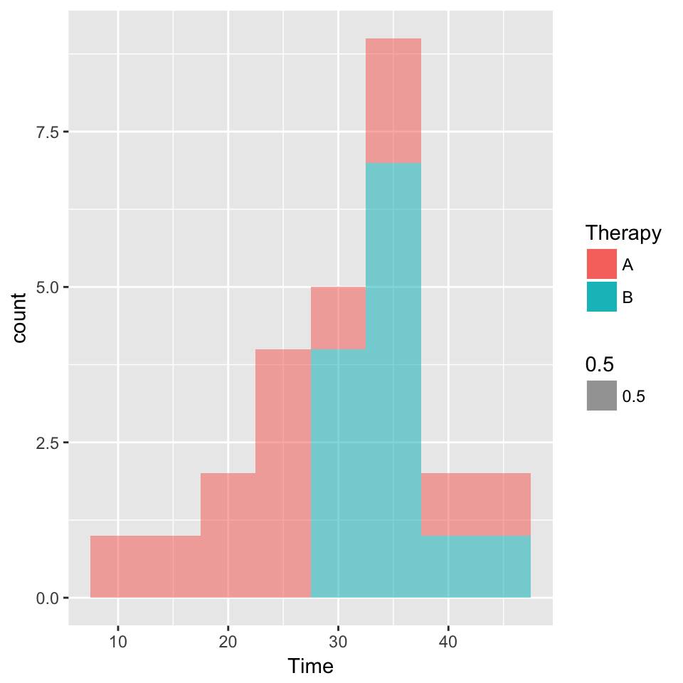
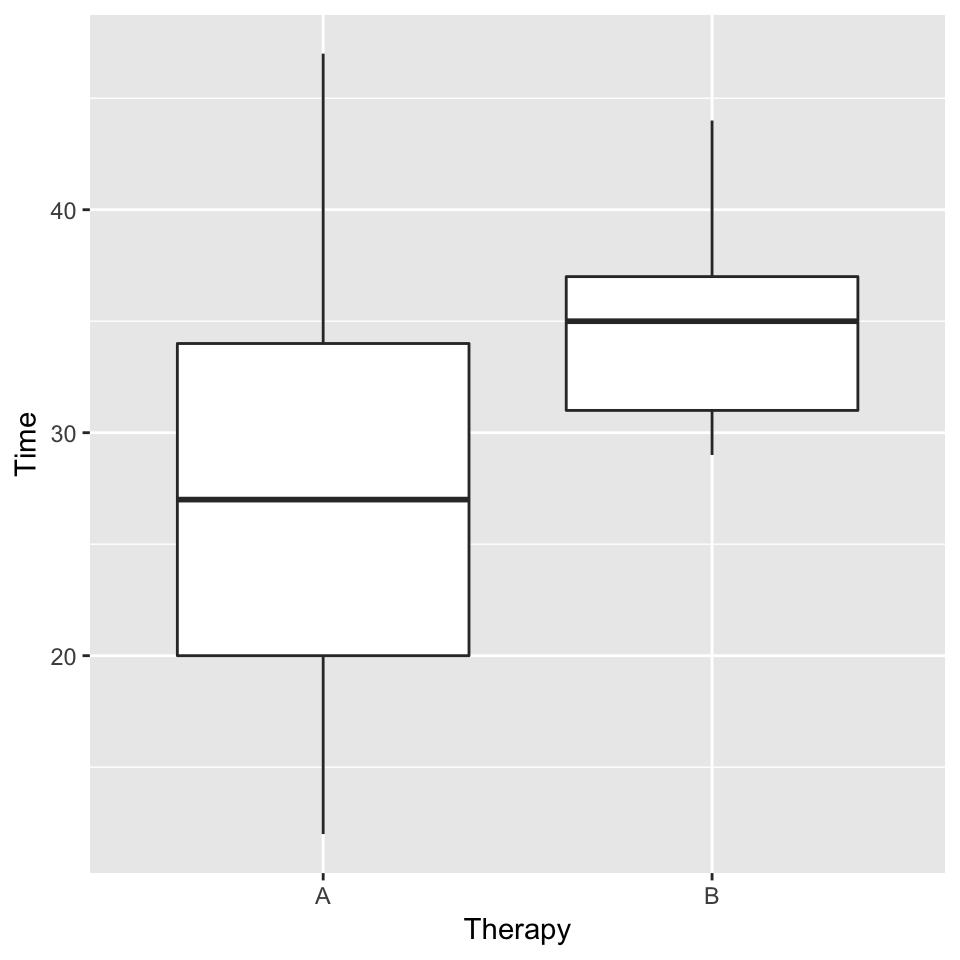

weight = read.table("./data/Weight.txt", header =T)
wlabor = read.csv("./data/WLabor.csv", header = T)[,1:3]
potencies = unlist(read.table("./data/Potencies.txt"))stem(potencies)##
## The decimal point is at the |
##
## 22 | 79
## 23 | 0234
## 23 | 68
## 24 | 013
## 24 | 589
## 25 | 0244
## 25 | 89
## 26 | 144
## 26 | 7799
## 27 | 123shapiro.test(potencies)##
## Shapiro-Wilk normality test
##
## data: potencies
## W = 0.93847, p-value = 0.08275qqnorm(potencies)
qqline(potencies)
mu = mean(potencies)
s = sd(potencies)
n = length(potencies)
SE = s/sqrt(n); SE## [1] 0.2682203lower = mu - qt(0.995, df=n-1)*SE; lower## [1] 24.35735upper = mu + qt(0.995, df=n-1)*SE; upper## [1] 25.83599library(plyr)
difference_scores = mutate(wlabor, difference_scores = Year_68 - Year_72)
difference_scores## City Year_68 Year_72 difference_scores
## 1 N.Y. 0.42 0.45 -0.03
## 2 L.A. 0.50 0.50 0.00
## 3 Chicago 0.52 0.52 0.00
## 4 Philadelphia 0.45 0.45 0.00
## 5 Detroit 0.43 0.46 -0.03
## 6 San Francisco 0.55 0.55 0.00
## 7 Boston 0.45 0.60 -0.15
## 8 Pitt. 0.34 0.49 -0.15
## 9 St. Louis 0.45 0.35 0.10
## 10 Connecticut 0.54 0.55 -0.01
## 11 Wash., D.C. 0.42 0.52 -0.10
## 12 Cinn. 0.51 0.53 -0.02
## 13 Baltimore 0.49 0.57 -0.08
## 14 Newark 0.54 0.53 0.01
## 15 Minn/St. Paul 0.50 0.59 -0.09
## 16 Buffalo 0.58 0.64 -0.06
## 17 Houston 0.49 0.50 -0.01
## 18 Patterson 0.56 0.57 -0.01
## 19 Dallas 0.63 0.64 -0.01stem(difference_scores$difference_scores)##
## The decimal point is 1 digit(s) to the left of the |
##
## -1 | 550
## -0 | 9863321111
## 0 | 00001
## 1 | 0shapiro.test(difference_scores$difference_scores)##
## Shapiro-Wilk normality test
##
## data: difference_scores$difference_scores
## W = 0.89814, p-value = 0.04503qqnorm(difference_scores$difference_scores)
qqline(difference_scores$difference_scores)
wilcoxTest = wilcox.test(difference_scores$difference_scores, conf.int = T); wilcoxTest##
## Wilcoxon signed rank test with continuity correction
##
## data: difference_scores$difference_scores
## V = 16, p-value = 0.01324
## alternative hypothesis: true location is not equal to 0
## 95 percent confidence interval:
## -0.08004133 -0.01002685
## sample estimates:
## (pseudo)median
## -0.04498224difference = wilcoxTest$estimate; difference## (pseudo)median
## -0.04498224CI95 = as.numeric(wilcoxTest$conf.int); CI95## [1] -0.08004133 -0.01002685library(ggplot2)
ggplot(weight, aes(Time, fill=Therapy, alpha=0.5)) +
geom_histogram(binwidth = 5)
ggplot(weight, aes(Therapy, Time)) +
geom_boxplot()
therapyA = weight[weight$Therapy=="A", 2]
shapiro.test(therapyA)##
## Shapiro-Wilk normality test
##
## data: therapyA
## W = 0.95952, p-value = 0.7462therapyB = weight[weight$Therapy=="B", 2]
shapiro.test(therapyB)##
## Shapiro-Wilk normality test
##
## data: therapyB
## W = 0.93559, p-value = 0.4024mu = mean(therapyA)
s = sd(therapyA)
n = length(therapyA)
SE = s/sqrt(n); SE## [1] 2.725799lower = mu - qt(0.975, df=n-1)*SE; lower## [1] 21.67638upper = mu + qt(0.975, df=n-1)*SE; upper## [1] 33.55439mu = mean(therapyB)
s = sd(therapyB)
n = length(therapyB)
SE = s/sqrt(n); SE## [1] 1.117372lower = mu - qt(0.975, df=n-1)*SE; lower## [1] 32.25776upper = mu + qt(0.975, df=n-1)*SE; upper## [1] 37.12685varTest=var.test(therapyA, therapyB); varTest##
## F test to compare two variances
##
## data: therapyA and therapyB
## F = 5.951, num df = 12, denom df = 12, p-value = 0.00426
## alternative hypothesis: true ratio of variances is not equal to 1
## 95 percent confidence interval:
## 1.815845 19.503164
## sample estimates:
## ratio of variances
## 5.951027wilcoxTest=wilcox.test(therapyA, therapyB, conf.int = T); wilcoxTest## Warning in wilcox.test.default(therapyA, therapyB, conf.int = T): cannot
## compute exact p-value with ties## Warning in wilcox.test.default(therapyA, therapyB, conf.int = T): cannot
## compute exact confidence intervals with ties##
## Wilcoxon rank sum test with continuity correction
##
## data: therapyA and therapyB
## W = 35, p-value = 0.01185
## alternative hypothesis: true location shift is not equal to 0
## 95 percent confidence interval:
## -13.999970 -2.000003
## sample estimates:
## difference in location
## -8.000047difference = wilcoxTest$estimate; difference## difference in location
## -8.000047CI95 = as.numeric(wilcoxTest$conf.int); CI95## [1] -13.999970 -2.000003clearance_granted = c(49, 117)
clearance_not_granted = c(33, 17)
employee = data.frame(clearance_granted, clearance_not_granted)
rownames(employee) = c("salaried", "wage_earning")Xsq = chisq.test(employee); Xsq##
## Pearson's Chi-squared test with Yates' continuity correction
##
## data: employee
## X-squared = 20.194, df = 1, p-value = 6.997e-06chisqV = Xsq$statistic; chisqV## X-squared
## 20.19402p = Xsq$p.value; p## [1] 6.997145e-06salariesProp = prop.test(49, 49+33, conf.level = 0.99); salariesProp##
## 1-sample proportions test with continuity correction
##
## data: 49 out of 49 + 33, null probability 0.5
## X-squared = 2.7439, df = 1, p-value = 0.09763
## alternative hypothesis: true p is not equal to 0.5
## 99 percent confidence interval:
## 0.4499513 0.7299512
## sample estimates:
## p
## 0.597561wageearningProp = prop.test(117, 117+17, conf.level = 0.99); wageearningProp##
## 1-sample proportions test with continuity correction
##
## data: 117 out of 117 + 17, null probability 0.5
## X-squared = 73.142, df = 1, p-value < 2.2e-16
## alternative hypothesis: true p is not equal to 0.5
## 99 percent confidence interval:
## 0.7767396 0.9326389
## sample estimates:
## p
## 0.8731343diffPropTest = prop.test(as.matrix(employee)); diffPropTest##
## 2-sample test for equality of proportions with continuity
## correction
##
## data: as.matrix(employee)
## X-squared = 20.194, df = 1, p-value = 6.997e-06
## alternative hypothesis: two.sided
## 95 percent confidence interval:
## -0.4055746 -0.1455721
## sample estimates:
## prop 1 prop 2
## 0.5975610 0.8731343diffProp = diffPropTest$estimate[1] -diffPropTest$estimate[2]; diffProp ## prop 1
## -0.2755734CI99 = diffPropTest$conf.int; CI99## [1] -0.4055746 -0.1455721
## attr(,"conf.level")
## [1] 0.95